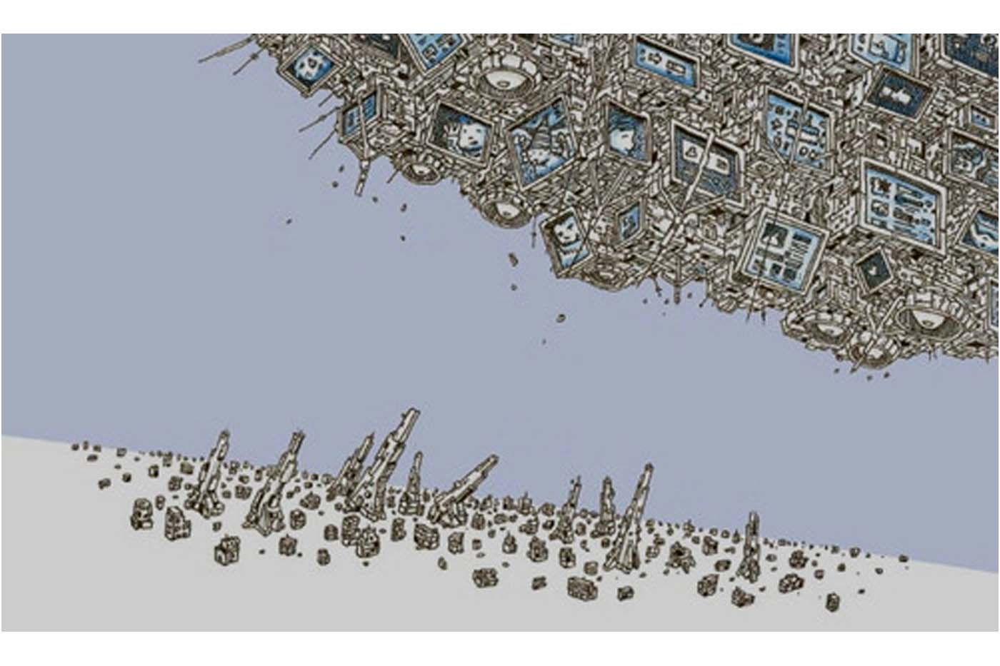

Intelligence Bombs: Dropping WikiReaders from Planes
Originally published at https://singularityhacker.com/intelligence-bombs-dropping-wikireaders-from-planes

This post is about jumping over an industrial revolution straight to a technological singularity.
Its commonly believed that nations must pass through certain established stages in their move from barbarism to first world status.
This is a mistake. It’s possible to leapfrog developmental stages if given the right external stimulus.
This is evidenced by the the way modern commerce has been made possible in Africa by the availability of cellphones. Prior to cell phones and cloud banking you couldn’t do significant financial exchanges.
So how might one trigger a technological quantum leap in a third world country? I’m going to suggest one way. Drop WikiReaders from the sky.
The WikiReader is an eInk device that holds the entire text of Wikipedia and can also be loaded with the entire Gutenberg archive (about 50k books). It’s searchable, requires no Internet or power grid. It runs for a year on AAA batteries. And to keep this in perspective, these devices are several years old. Something more advanced could be produced for less than $10 a unit now.
We’re talking about putting the equivalent of the library of Alexandria in the hands of every man, woman, and child. Intelligence bombs. Shuffling foreign politicians hasn’t resulted in real change over seas. Real change is cultural and idealogical and can only happen if world views change.
If software is eating the world it’s time for it to start eating war. This decades WikiReader is next decades question/answer expert systems. It’s knowledge based PSYOPS. Drop AI’s not bombs.